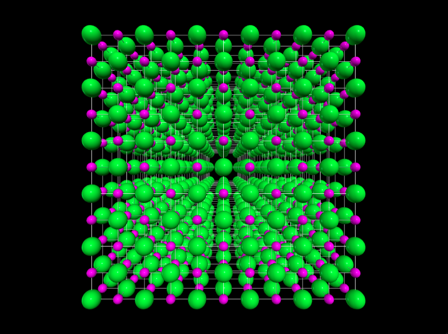

(Click figures to view movies)
Lattice Structure of NaCl-type crystals
Lattice Structures of Perovskites compounds -- to produce solar cells
Complex magnetic field around accretion stars.
A realistic, non-dipole magnetic field (left) around a star. Accretion flow (right) is complex and channelled by the interacioin between disk and field.
Turbulent nulcear combustion during Type Ia Supernovae explosion phase
Left: Type Ia supernova explosion in pure deflagration (PD) channel. Right: Type Ia supernova explosion in deflagration to detonation (DDT) channel
An animation made by Brad Gallagher, showing nucleosyntheis in supernovae:
See Long et al, 2014, Apj,789,103 for a reference.